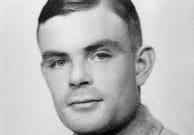
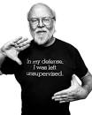

Turing es conocido principalmente por su contribución en el campo de la ciencia de la computación y la criptografía durante la Segunda Guerra Mundial. Durante el conflicto, trabajó en Bletchley Park, el centro de inteligencia británico, donde lideró un equipo de criptoanalistas para descifrar los códigos alemanes, particularmente el código Enigma utilizado por las fuerzas nazis.
Mercury se destacó por su poderosa voz, su rango vocal excepcional y su carismática presencia escénica. Fue reconocido por su versatilidad musical y su habilidad para abordar diferentes géneros, desde el rock y el pop hasta la ópera y el cabaret. Su estilo único y su forma de interpretar le otorgaron una amplia base de fanáticos en todo el mundo.

Gosling obtuvo su doctorado en Ciencias de la Computación en la Universidad Carnegie Mellon en 1983. Durante su carrera, ha trabajado en diversas compañías y proyectos de investigación, pero es más conocido por su trabajo en Sun Microsystems (posteriormente adquirida por Oracle Corporation).